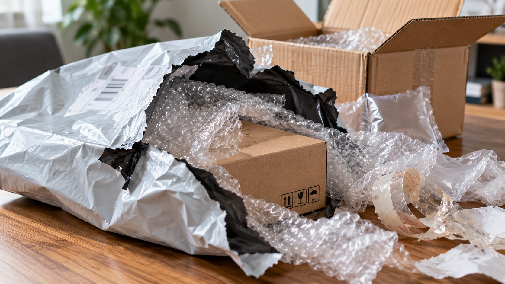

The Issue
The issue: the plastic in your parcel.
“Follow the Parcel” tells the story.
This page lays out the facts: what it is, how big it is, where it goes, what it harms, and what local studies have found.
What it is
Ano ba talaga 'yung e-commerce plastic packaging waste?
Balikan mo ang huli mong order. Ilang plastic ang pinunit mo bago mo mahawakan ang binili mong item?
Ano ba ang e-commerce plastic packaging waste?
Ang e-commerce plastic packaging waste ay tumutukoy sa mga itinapong single-use plastic, tulad ng mga poly mailer, bubble wrap, at adhesive tape, na ginamit sa pagbabalot at pagpapadala ng mga order mula sa mga online shopping platform.
Saan ito gawa?
Karamihan dito ay gawa sa manipis na plastic film na tinatawag na low-density polyethylene (LDPE).
Bakit sila ang top choices na pambalot para sa parcels?
- Mura
- Magaan
- Hindi madaling mapunit
Pero ang mga dahilan kung bakit ito ang top choice para sa packaging ay siya ring dahilan kung bakit problema ito pagkatapos.
Source: Huan et al., 2023

Shipping labelPoly mailerBubble wrapProduktoAir pillowTapeKahon| Layer | Para saan | Gawa saan | Anong nangyayari after |
|---|---|---|---|
| Poly mailer | Supot na lalagyan ng order | Plastic film (polyethylene) | Tinatapon; low value para sa mga recyclers |
| Bubble wrap | Pang-cushion sa item; dagdag proteksyon | LDPE film na may hangin | Minsan tinatabi; kadalasang tinatapon |
| Air pillows | Pampuno ng bakanteng space sa kahon | Plastic film | Pinuputok at tinatapon |
| Tape | Pang-selyo | Plastic film na may pandikit | Nakadikit sa kahon o mailer; tinatapon |
| Shipping label | Customer name, customer address, QR code o barcode | Sticker (papel o plastic) na may pandikit | Nakadikit sa mailer; nagpapahirap sa recycling |
Bakit mahirap i-recycle?
Hindi dahil imposible. Ang problema, halos walang bumibili. Ayon sa World Bank, mababa ang halaga ng flexible plastic packaging at mahirap itong i-recycle.
Ayon sa WWF-Philippines, ang sachets at iba pang low-value plastic ay hindi binibili ng recycling companies, kaya madalas itong iniiwan ng mga waste picker.
Source: World Bank, 2021, p. 15; WWF-Philippines et al., 2020, p. 31
Bakit parang bagong uri ito ng basura?
Dati, kapag bumili ka sa mall, iyong malalaking kahon at plastic na ginamit sa pag-deliver ng stocks ay naiiwan sa bodega ng tindahan. Isang bagsakan, isang tapunan.
Dati · tindahan
1 bulk box
50 items, dinala sa iisang tindahan.
1 balot ang tinatapon
Ngayon · e-commerce
50 parcels
50 items, pinadala sa 50 bahay.
50 set ng mailer at bubble wrap ang tinatapon
Halimbawa lang ang 50 para ipakita ang pattern. Hindi ito sukat mula sa isang study.
Ayon sa isang research sa India, dahil sa e-commerce, dumami ang maliliit na shipment at bawat isa ay may sariling packaging.i
Source: Syed Ali et al., 2024
How big it is
Gaano kalaki ang problema?
Ilang tonelada ng plastic ang itinatapon natin? Ito ang unang dapat mong malaman.
Ang plastic waste ng buong bansa
Ayon sa World Bank, 2.7 million tonelada ng plastic waste ang nagagawa ng Pilipinas kada taon, at nasa 20% nito ang napupunta sa dagat.
Ayon naman sa isang 2024 report ng European Union, nasa 1.51 million tonelada lang, o 13.1 kg kada tao. Mula dito, 56% ang mismanaged waste, o hindi maayos na nakolekta o natapon.
Source: World Bank, 2021; European Commission & GIZ, 2024
Plastic waste ng Pilipinas kada taon, ayon sa dalawang report (2021 at 2024)
Bakit magkaiba? Iba ang taon, iba ang data na ginamit, iba ang paraan ng calculation. Hindi namin pinili kung alin ang "tama." Gusto naming ipakita na sa parehong estimate, lumalagpas sa isang milyong tonelada kada taon ang plastic waste na nagagawa ng Pilipinas.i
Isa pang sukat mula sa Department of Environment and Natural Resources (DENR) ang nagsasabing nasa 61,000 tonelada ng solid waste ang nagagawa ng bansa kada araw, at hanggang 24% nito ay plastic.
Source: Climate Change Commission, 2024
Ilan ang na-re-recycle?
Sabi ng WWF-Philippines, 9% lang ng lahat ng plastic ang nare-recycle. Sabi naman ng World Bank, 28%. Pero ang 28% ay para lang sa apat na pangunahing klase ng plastic na sinuri nila: polyethylene terephthalate (PET), polypropylene (PP), high-density polyethylene (HDPE) at low-density polyethylene (LDPE). Maaaring tama pareho, kasi magkaiba naman ang sinusukat nila.
Porsyento ng recycled plastics ayon sa dalawang sources
Kasama sa apat na 'yon ang LDPE, ang klase ng plastic ng karamihan ng mailer at bubble wrap. Pero ayon sa parehong report, PET ang may pinakamataas na recycling rate sa apat.
Nasa 78% ng halaga ng mga plastic na ito ang nasasayang dahil tinatapon lamang. Katumbas ito ng US$790 hanggang 890 million kada taon.
Source: WWF-Philippines et al., 2020; World Bank, 2021, pp. 14–15, 24–25
At ang parcels?
Ayon sa isang 2023 study, nasa 11,790 tonelada ng e-commerce plastic packaging ang naging basura noong 2022. Mga 424 tonelada dito ang umabot sa dagat.i Maliit ito kumpara sa lahat ng plastic waste sa bansa: mga 0.12% ng plastic na dinadala ng mga ilog natin papuntang dagat. Pero mabilis siyang lumalaki.
Ang e-commerce ay 3.4% ng gross domestic product (GDP) noong 2019 at tumaas sa 5.5% noong 2022. Pagdating ng 2030, pwede pang umabot sa 503 hanggang 1,510 tonelada kada taon ang plastic waste mula sa parcels na maaaring mapunta sa dagat, at 2,013 tonelada kung dodoble ang dalas ng pag-order.
Source: Huan et al., 2023
Paano nila nakuha ang 11,790?
Hindi nila binilang ang bawat parcel. Mula sa ₱1.1 trillion na kabuuang halaga ng benta sa e-commerce noong 2022, hinati ito sa average order value na ₱2,887, kaya nakuha ang mga 381 million orders. Pagkatapos, ipinagpalagay na may 2 piraso ng plastic na pambalot ang bawat order, at 15.47 grams ang bigat ng bawat piraso.
381 million orders × 2 pieces ng plastic × 15.47 g per packaging ≈ 11,790,000,000 g = 11,790 tonelada. Order count is our calculation from the study's inputs.
Ibig sabihin, mas marami ang plastic kada order, mas maraming basura.
Source: Huan et al., 2023
Paano kung 2025 data ang gamitin?
Wala pang published na study para sa 2025. Kaya sinubukan naming i-replicate ang calculation ng 2023 study gamit ang 2025 e-commerce data ng Pilipinas mula sa Cube Asia, para makita kung gaano kalaki ang layo ng estimate noong 2022 kumpara noong 2025.
Umabot sa US$22 billion (₱1.26 trillion) ang pinagsamang kabuuang halaga ng benta ng Shopee, Lazada at TikTok Shop sa Pilipinas noong 2025. Mas mababa rin ang average order value kaysa sa ginamit sa 2023 study: ₱316 sa Shopee, ₱416 sa Lazada, ₱198 sa TikTok Shop, o simple average na ₱310.
Source: Htet, 2026 (Cube Asia)
≈125.76 kt
ng plastic packaging ang posibleng nalilikha ng e-commerce sa Pilipinas noong 2025. Sariling kalkulasyon namin ito, hindi published na study.i
Paano nakuha ang 125.76 kilotonelada?
- E-commerce market size (2025): ₱1.26 trillion
- Average order value: ₱310 (simple average ng Shopee ₱316, Lazada ₱416, at TikTok Shop ₱198)
- Tinatayang taunang orders (2025): ₱1.26 trillion ÷ ₱310 = humigit-kumulang 4.06 bilyong orders
- Plastic kada order: 2 piraso × 15.47 grams = 30.94 grams
- Kabuuan: 4.06 bilyong orders × 30.94 g = 125,756,000,000 g ≈ 125,756 tonelada (125.76 kilotonelada)
Gamit ang parehong 72% | 88% | 7% | 5% na plastic fate distribution sa study:
- 79.68 kilotonelada napupunta sa lupa
- 6.34 kilotonelada sinunog
- 4.53 kilotonelada sa dagat (mga 12.4 tonelada kada araw)
Mula sa kalkulasyong ito, makikitang halos sampung beses itong mas mataas kaysa sa 11,790 tonelada noong 2022.
Pero kung titingnan, halos pareho lang ang market size noong 2022 (₱1.1 trillion) at 2025 (₱1.26 trillion). Ang nagbago ay ang average order value na ginamit: ₱2,887 sa study, ₱310 sa bagong data. Mas mababa ang order value, mas maraming order sa parehong halaga ng benta, kaya mas maraming pambalot na plastic ang nagagamit.
Disclaimer: Ang datos na 11,790 tonelada pa rin ang pangunahing numero sa buong site dahil galing ito sa published study. Ang 125.76 kilotonelada ay sarili naming kalkulasyon, at hindi pa ito nasusuri ng eksperto. Nais lang ipakita nito na malaki ang epekto ng average order value sa estimate, kaya maaaring mas mababa o mas mataas ang actual na e-commerce plastic waste noong 2025.
Ayon din sa Cube Asia, lumaki nang 15% ang benta mula 2024 hanggang 2025. Kung ganoon pa rin ang paglaki kada taon, aabot sa 253 kilotonelada ang basurang plastic na galing sa e-commerce pagdating ng 2030. Halimbawa lang ito, hindi forecast.
125.76 kt × 1.15⁵ ≈ 253 kt.
Where it goes
Saan napupunta ang plastic ng parcel mo?
Hindi mo nabibigyang-pansin kung saan napupunta ang mga plastic packaging na galing sa mga parcel. Pagkatapon mo, saan kaya ito napupunta?
Ayon sa pag-aaral noong 2023, paglabas ng basurahan, pwedeng mapunta ang plastic ng parcel sa ilang magkakaibang hantungan. May napupunta sa dagat, ngunit karamihan ay hindi.i
Source: Huan et al., 2023
Saan napunta ang 11,790 tonelada?
Nakolekta (28%, assumed)
Ayon sa 2023 study, mga 3,300 tonelada ng parcel plastic ang ipinagpalagay na nakolekta. Pero tandaan, assumption lamang ito at hindi sinukat. Kinuha nila ang ratio sa pangkalahatang waste data ng bansa.
Maaaring mas mataas ang estimate na ito kaysa sa totoo dahil mababa ang halaga ng plastic film, kaya madalas itong iniiwan ng mga nangongolekta.
Source: Huan et al., 2023; World Bank, 2021
Naiiwan sa lupa (88% ng mismanaged parcel plastic waste)
Nasa 7,470 toneladang parcel plastic ang napupunta sa dumpsite, nababaon sa lupa, o nakakalat lang sa bakanteng lote at gilid ng kalsada.
Ipinag-utos ng Republic Act No. 9003 (RA 9003) ang pagpapasara ng mga open dumpsite. Pero noong 2021, mga 200 open dumpsite pa ang operating ayon sa National Solid Waste Management Commission. Ayon naman sa report ng Commission on Audit noong 2023, 245 lamang ang operational na sanitary landfill sa buong bansa noong 2021, sapat lamang para serbisyuhan ang 478 sa 1,634 local government units (LGUs) sa Pilipinas, o 29.25%.
Source: Huan et al., 2023; Republic Act No. 9003, 2001; DENR, 2021; Commission on Audit, 2023
Ang porsyentong sinusunog (7%)
Sa mga basurang plastic, tinatayang 7% ang sinusunog, kadalasan sa likod-bahay o bakanteng lote. Sa ilalim ng RA 9003, bawal ang open burning ng basura. Binanggit ng study ang 7% na burning rate pero hindi ito isinama sa calculation, kaya ang 590 tonelada ay kalkulasyon lamang ng Isang Parcel.i
Ayon sa United Nations Environment Programme (UNEP), ang pagsusunog ng plastic ay naglalabas ng dioxins, furans, mercury, polychlorinated biphenyls (PCBs) at black carbon, na masama sa puso at baga.
Source: Huan et al., 2023; Republic Act No. 9003, 2001; UNEP, 2019
Kalkulasyon: 7% × 8,490 t ≈ 590 t.
Inaanod sa dagat (5%)
Bagamat maliit na porsyento lang ng parcel plastic ang umaabot sa dagat (mga 424 tonelada noong 2022), ito ang sinusundan ng Follow the Parcel. Ang mga basurang napupunta sa estero at kanal ay naaanod sa ilog, hanggang mapunta sa dagat gaya ng Manila Bay. Dito nagsisimulang maging microplastics ang plastic, na posibleng makain ng mga isda at iba pang hayop sa dagat.
Sa sarili naming kalkulasyon gamit ang 2025 e-commerce sales data, nasa 4.53 kilotonelada (4,530 tonelada) ang posibleng umabot sa dagat, o tinatayang 12.4 tonelada kada araw. Kagaya ng ibang plastic, unti-unti itong nadudurog dahil sa pagkabilad sa araw at sa agos at alon ng dagat, hanggang maging microplastics. Dito na rin ito posibleng makain ng mga lamang-dagat.
Ang 4.53 kilotonelada ay galing sa sarili naming kalkulasyon sa How big it is, hindi galing sa study.
Sundan ang daang 'to →Hindi natatapos sa lupa ang paglalakbay ng 88%
Inassume ng model na ang plastic sa lupa ay mananatili sa lupa. Pero sinabi mismo ng mga author na sa katagalan, pwedeng maanod ang ilan papuntang dagat, lalo na tuwing umuulan o bumabaha. Karamihan kasi nito ay nasa open dumpsites o nakakalat lang, hindi sa sanitary landfill. Kaya pwedeng kulang pa ang 424 toneladang tinutukoy na umaabot sa dagat.
Ilang porsyento ang tumatagas? Walang Philippine study na sumusukat nito. Sa isang global model, in-assume na 15% hanggang 40% ng mismanaged plastic malapit sa baybayin ang umaabot sa dagat. Muli, calculated estimate ito mula sa isang model na gumamit ng 2010 data, at hindi aktwal na pagsusukat.
Source: Huan et al., 2023; Jambeck et al., 2015 (global model, 2010 data)
Paano naaanod ang plastic sa lupa?
- Ulan: Tinutulak ng tubig-ulan ang plastic papunta sa kanal at estero.
- Hangin: Magaan ang poly mailer at bubble wrap, kaya madaling liparin mula sa tambakan at dumpsite.
- Baha at bagyo: Nailalabas ang plastic na matagal nang naipit sa estero at ilog, at naaanod ito sa bunganga ng ilog tuwing tumataas ang baha.
- Sa kalye tuwing koleksyon: Nakatambak sa kalye o nililipad ang mga supot ng basura habang hinihintay ang trak.
Mga halimbawa lamang ito kung paano napupunta sa dagat ang plastic ng parcel. Wala pang pag-aaral na sumukat kung gaano karami ang naaanod sa bawat paraan.
Sa study, tiningnan din ang projection ng dami ng e-commerce plastic packaging waste sa tatlong scenario: (a) kung walang magbabago sa kasalukuyang sitwasyon, (b) kung lalala ang pagdami ng waste mula sa e-commerce, at (c) kung magkakaroon ng positibong pagbabago sa waste management ng bansa.
Kung may positibong pagbabago sa sistema ng waste management, maaaring bumaba sa 50% ang mismanaged waste pagdating ng 2030 (mula 72%). Katumbas ito ng 1,010 tonelada ng parcel plastic na hindi na aabot sa dagat sa loob ng 8 taon.
Source: Huan et al., 2023
What it harms
Ano'ng epekto nito sa ecosystem?
Hindi lamang ang dagat ang apektado ng plastic pollution; damay rin ang mga freshwater ecosystem, hangin, mga hayop, at tayong mga tao.
Ang ecosystem ay binubuo ng "biotic" components (mga buhay na organismo tulad ng plankton, isda, at tao) at "abiotic" components (tulad ng tubig, lupa, at hangin). Pareho itong apektado ng parcel plastic pollution.

Sa tubig
Sa pag-aaral na isinagawa noong 2018–2019, kumuha ang mga researcher ng sample ng tubig at latak (sediment) mula sa limang ilog na dumadaloy patungong Manila Bay: Cañas, Meycauayan, Parañaque, Pasig, at Tullahan. Lahat ay may microplastics: 1,580 hanggang 57,665 particles per cubic meter sa ibabaw ng tubig, at 386 hanggang 1,357 particles per kilo sa tuyong latak sa ilalim.
Source: Osorio et al., 2021
Sa lupa, hangin at kanal
- Lupa: pinakamalaking daan ng parcel plastic, at kulang ang materials recovery facility (MRF) at sanitary landfill para saluhin ito. Side trip 5A →
- Hangin: ang sinusunog na plastic ay naglalabas ng toxic gases na masama sa puso at baga. Side trip 5B →
- Kanal at baha: tinatangay ng ulan ang plastic sa kalsada papuntang kanal, kaya bumabara at bumabaha. Station 6 →
Sa mga hayop sa dagat
Nasasabit ang mga hayop sa plastic, o nakakain nila ito. Ang microplastics ay kasinlaki ng plankton, kaya napagkakamalang pagkain ng maliliit na isda.i
Source: Huan et al., 2023
Sa isda at shellfish
Sa Agusan del Norte (Station 9), nagsagawa ng pag-aaral sa mga bangus at nakitang halos lahat ng sample ay may microplastics sa bituka.i Sa isa pang ulat, nasa 60% ng particles na nakuha sa mga sample ay kumpirmadong microplastics.
Source: Philippine Daily Inquirer, 2022; Philippine Daily Inquirer, 2023
Sa Tacloban City, may nakitang microplastics sa tahong at halaan, at karamihan ay fibers. Tinatayang nasa 0.003 mg kada araw ang pwedeng makain ng isang tao mula sa mga seafood na ito. Maliit, pero patunay na umaabot ito sa pagkain.
Source: Yu et al., 2024
Sa mga tao
Pinag-aaralan pa kung ano ang epekto ng microplastics sa katawan ng tao, at ayon sa mga researcher, hindi pa alam ang buong panganib (Station 10).i
Source: Philippine Daily Inquirer, 2022
May epekto rin ito sa ekonomiya. Ayon sa World Bank, US$790 hanggang 890 million na halaga ng plastic ang nasasayang kada taon dahil tinatapon lang. Pinaka-apektado ang mga coastal community, pati ang pangingisda at turismo.
Source: World Bank, 2021, pp. 14–15
Sa hinaharap
Kung walang magbabago sa sistema ng waste management, dadami ang parcel plastic na aabot sa dagat pagdating ng 2030 (tingnan ang projection). At maaari pang madagdagan ng mga pwedeng maanod mula sa tambakan tuwing umuulan.
Source: Huan et al., 2023
Local studies
Local studies: ano'ng nakita nila nang malapitan?
Galing sa models ang karamihan ng national numbers. Pero ano'ng nangyayari sa totoong bahay, sa totoong barangay?
Tatlong hiwalay na pag-aaral ang isinagawa sa Metro Manila, Cavite, at Camarines Sur. Inilahad nila sa kanilang research ang kanilang mga obserbasyon at natuklasan:i
Metro Manila · Leon et al., 2022 (data mula late 2020)
Mula huling linggo ng Nobyembre hanggang Disyembre 2020, 30 households sa Metro Manila ang nagbilang at nagtimbang ng plastic mula sa kanilang online deliveries, linggo-linggo, at nag-submit sa Google Forms.
On average, bawat household ay nagtapon ng 8.63 outer wraps at 3.41 na piraso ng bubble wrap kada linggo. Tumaas ang plastic bawat linggo habang papalapit ang Pasko.i
May isang resulta na nakakagulat: wala raw silang nakitang malinaw na relasyon sa pagitan ng dalas ng pag-order at dami ng plastic. Pero maliit ang sample, kaya mahirap itong gawing matibay na konklusyon.
Nagsimula sa 30 households, 21 na lang ang nag-submit pagdating ng ikaapat na linggo. Nilinaw ng mga author, hindi nito kinakatawan ang buong bansa.
Source: Leon et al., 2022 (DLSU)
Dasmariñas, Cavite · Sadie et al., 2024
Lumobo nang mahigit tatlong ulit ang parcel plastic waste sa Dasmariñas noong pandemya. Batay sa online survey sa 243 residente, umakyat sa 24,628 tonelada noong 2022 ang basura mula sa dating 7,463 tonelada noong 2019. Dahil dito, tumaas sa 11.22% ang ambag ng parcel waste sa kabuuang solid waste ng lungsod mula sa dating 3.8%.
Kasabay nito ang pagdami ng online orders. Ang average na pagbili ng isang consumer ay tumaas mula 1.3 beses kada buwan noong 2019 hanggang 4.4 beses noong 2022. Lumabas din sa survey na bubble wrap ang pinakakaraniwang packaging material, na nakita sa mahigit 95% ng mga natanggap na parcel.
Estimate ito mula sa survey ng 243 tao, hindi timbang ng totoong basura. Ang 11.22% ay comparison sa projected na kabuuang basura ng lungsod.
Source: Sadie et al., 2024
Pasacao, Camarines Sur · Bequio et al., 2026
Noong simula ng 2026, 30 pamilya sa Barangay Caranan ang nag-ipon at nagtimbang linggo-linggo ng packaging mula sa kanilang online orders sa loob ng isang buwan. Sila ang napiling suriin mula sa 100 residente dahil sila ang pinakamadalas mag-order.
Sa loob ng isang buwan, nakakuha sila ng 7.085 kg ng plastic waste:
- Bubble wrap: 4.922 kg (halos 70% ng kabuuang timbang)
- Poly mailer: 2.163 kg
- Karton: 0 kg (dahil ginagamit ulit ng mga pamilya ang mga kahon)
Dahil sa datos na ito, gumawa ng hakbang ang barangay at nagpasa ng resolusyon para sa waste plan sa 2027, na magbibigay ng incentives at magtataguyod ng take-back program kasama ang mga delivery courier.
Paalala lamang na ang datos na ito ay mula sa 30 pamilya na pinakamadalas mag-order, kaya hindi ito ang karaniwang lebel ng basura sa buong barangay o probinsya. Ang 70% ay kalkulasyon namin: 4.922 ÷ 7.085 ≈ 69.5%.
Source: Bequio et al., 2026